Call closure_plot_ecdf() to visualize CLOSURE results using
the data's empirical cumulative distribution function (ECDF).
A diagonal reference line benchmarks the ECDF against a hypothetical linear relationship.
See closure_plot_bar() for more intuitive visuals.
Usage
closure_plot_ecdf(
data,
samples = c("mean", "all"),
line_color = "#5D3FD3",
text_size = 12,
reference_line_alpha = 0.6,
pad = TRUE
)Arguments
- data
List returned by
closure_generate().- samples
String (length 1). How to aggregate the samples? Either draw a single ECDF line for the average sample (
"mean", the default); or draw a separate line for each sample ("all"). Note: the latter option can be very slow if many values were found.- line_color
String (length 1). Color of the ECDF line. Default is
"#5D3FD3", a purple color.- text_size
Numeric. Base font size in pt. Default is
12.- reference_line_alpha
Numeric (length 1). Opacity of the diagonal reference line. Default is
0.6.- pad
Logical (length 1). Should the ECDF line be padded on the x-axis so that it stretches beyond the data points? Default is
TRUE.
Details
The present function was inspired by
rsprite2::plot_distributions(). However, plot_distributions() shows
multiple lines because it is based on SPRITE, which draws random samples of
possible datasets. CLOSURE is exhaustive, so closure_plot_ecdf() shows
all possible datasets in a single line by default.
Examples
# Create CLOSURE data first:
data <- closure_generate(
mean = "3.5",
sd = "2",
n = 52,
scale_min = 1,
scale_max = 5
)
# Visualize:
closure_plot_ecdf(data)
